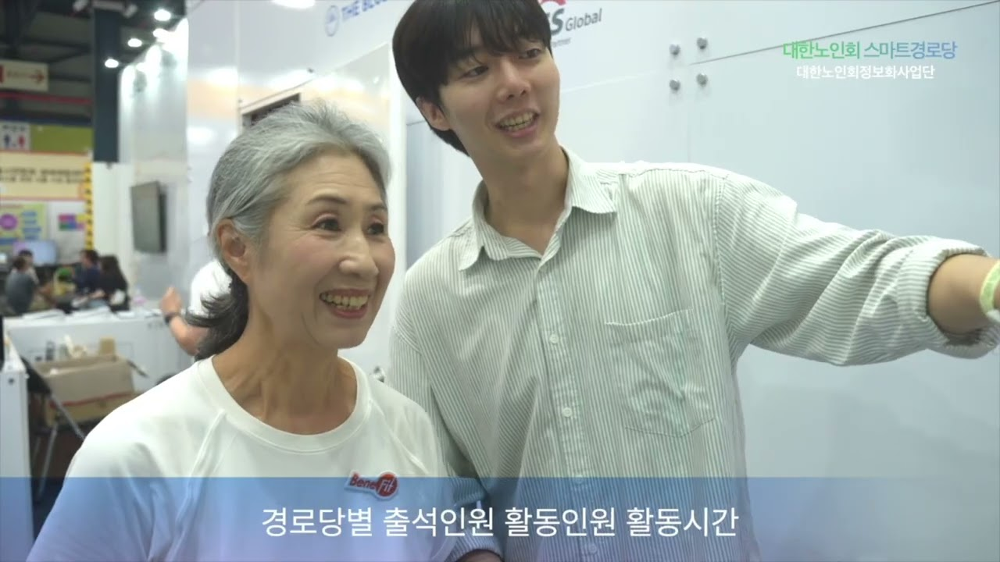
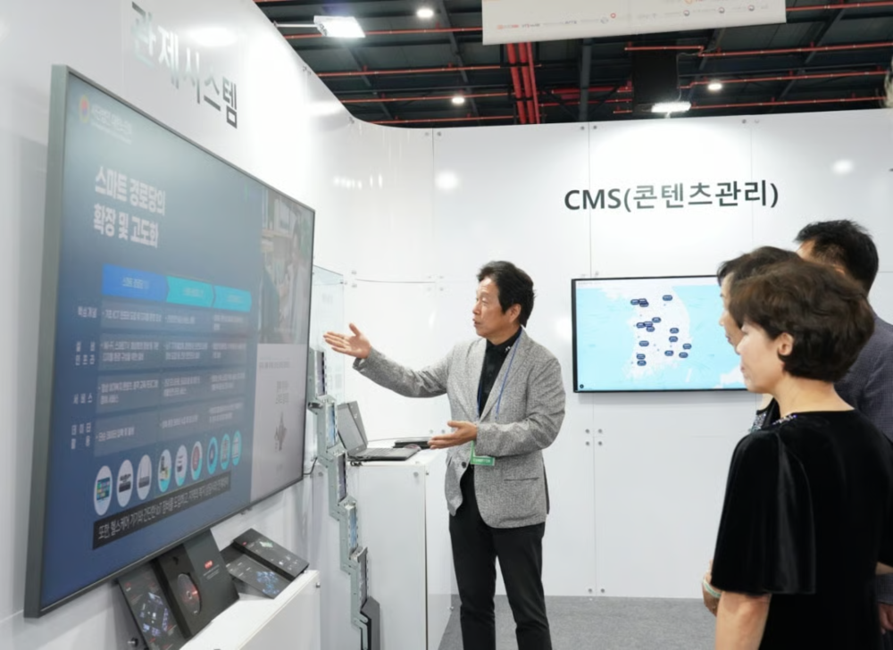
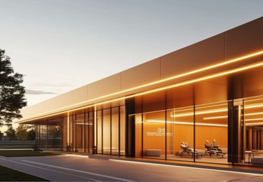
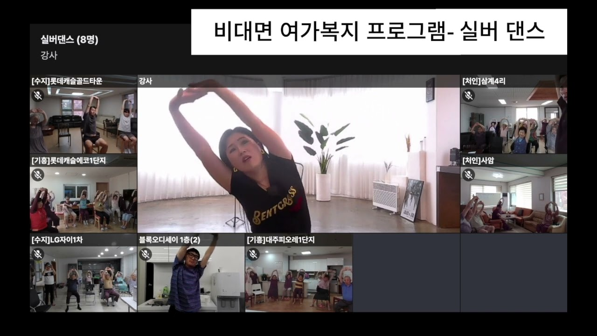

01공간의 연결
스마트경로당
익숙한 공간에 새로운 가능성을.
어르신이 매일 찾는 경로당에 디지털 환경을 더합니다. 공간과 기기, 함께 즐기는 콘텐츠를 하나의 이용 경험으로 연결합니다.
- 경로당 맞춤 디지털 인프라
- 키오스크와 생활 콘텐츠
- 함께 참여하는 건강·여가 프로그램

어르신이 머무는 공간부터
건강한 생활, 새로운 배움까지.

익숙한 공간에 새로운 가능성을.
어르신이 매일 찾는 경로당에 디지털 환경을 더합니다. 공간과 기기, 함께 즐기는 콘텐츠를 하나의 이용 경험으로 연결합니다.

건강한 일상을 만드는 공간.
공동주택과 시니어 커뮤니티의 환경에 맞춰 디지털 전환을 지원합니다. 건강 관리부터 운동과 여가까지, 일상 속 활동의 폭을 넓힙니다.

배움에는 끝이 없으니까.
건강, 금융, 법률, 문화까지. 생활에 필요한 지식과 다양한 교육 콘텐츠를 더 쉽게 만나도록 시니어의 배움과 정보 접근을 돕습니다.
디지털 세상에서 누구도
소외되지 않도록.
대한노인회정보화사업단은 시니어의 디지털 격차를 줄이고, 건강하고 행복한 노년을 위한 환경을 만들어갑니다. 익숙한 공간에서 새로운 기술을 만나고, 배움과 참여가 자연스럽게 이어지도록 돕습니다.
더 가까운 디지털 일상을 향해
이어온 사업단의 발자취입니다.
시니어 디지털 전환의 시작
권고모델 시범사업 · 10개 경로당
스마트경로당 모델 보급 · 41개
스마트경로당 모델 보급 · 65개
공간에 맞는 디지털 전환이 궁금하신가요?
사업과 협력에 대해 편하게 이야기해 주세요.